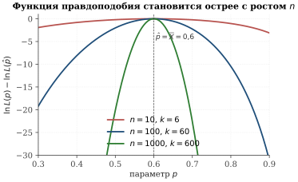
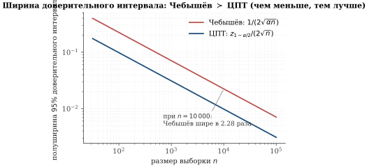
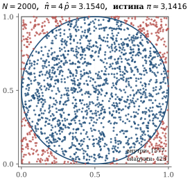
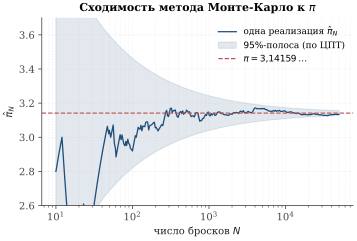
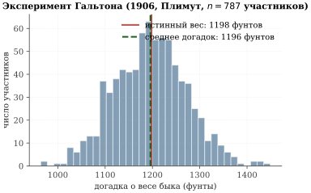
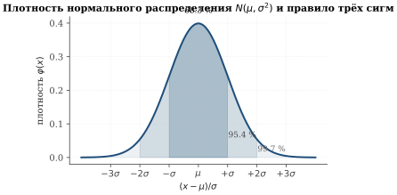
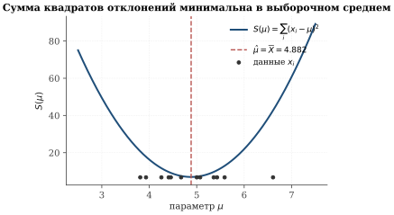

Простейшие примеры задач анализа данных. Принцип максимума правдоподобия
Опрос на втором туре выборов
На втором туре президентских выборов борьба идёт между двумя кандидатами, — назовём их условно A и B. До дня голосования социологическая служба проводит опрос: выбирает случайным образом n избирателей и спрашивает каждого, за кого тот собирается голосовать. Допустим, k человек из n ответили «за A».
Какую долю голосов в итоге наберёт кандидат A во всей стране?
Вероятностная модель. Предположим, что:
истинная (нам неизвестная!) доля сторонников A среди всех избирателей равна p\in(0,1);
опрашиваемые отбираются независимо друг от друга;
каждый отвечает честно — то есть с вероятностью p говорит «за A», с вероятностью 1-p говорит «за B».
Тогда ответ i-го опрошенного — это случайная величина X_i, принимающая значение 1 (за A) с вероятностью p и значение 0 (за B) с вероятностью 1-p. Такие величины называют бернуллиевскими, а описанную модель — схемой испытаний Бернулли.
Эксперимент, в котором n раз независимо повторяется испытание с двумя исходами («успех» с вероятностью p и «неудача» с вероятностью 1-p), называется схемой испытаний Бернулли. Число успехов S_n=X_1+\dots+X_n имеет биномиальное распределение:
\tag{3.1} \Pr(S_n=k)=\binom{n}{k}\,p^{k}(1-p)^{n-k},\qquad k=0,1,\dots,n.
Наблюдаемые данные — это вектор ответов X=(X_1,\dots,X_n) или, эквивалентно, число «единиц» в нём: S_n=X_1+\dots+X_n=k. Параметр p нам неизвестен — это и есть то, что мы хотим оценить по данным.
Идея метода максимума правдоподобия. Запишем вероятность того, что данные оказались именно такими, как мы их наблюдаем, — как функцию неизвестного параметра p:
\tag{3.2} L(p)\;=\;\Pr(X_1=x_1,\dots,X_n=x_n\mid p) \;=\;\prod_{i=1}^{n}p^{x_i}(1-p)^{1-x_i} \;=\;p^{k}(1-p)^{\,n-k},
где k=\sum_i x_i — наблюдаемое число «единиц». Функция L(p) называется функцией правдоподобия. Метод максимума правдоподобия (maximum likelihood estimation, сокращённо ОМП) состоит в выборе того \hat p, при котором L(p) достигает максимума:
\hat p\;=\;\operatorname*{arg\,max}_{p\in(0,1)} L(p).
Идея, на которой держится метод, очень житейская: из всех возможных значений параметра выбираем то, при котором наблюдаемые данные были бы наиболее правдоподобными. Если выпало 600 единиц из 1000, было бы странно объявить p=0{,}1 — ведь при таком p событие S_n=600 почти невозможно. Здравый смысл подсказывает: правдоподобнее всего гипотеза p\approx 0{,}6. Метод максимума правдоподобия и есть формализация этого здравого смысла.
Вычисление оценки. Удобнее искать максимум логарифма правдоподобия — это сводит произведение к сумме, не меняя точку максимума (логарифм монотонен):
\tag{3.3} \ln L(p)=k\,\ln p+(n-k)\,\ln(1-p).
Дифференцируем по p и приравниваем нулю (принцип Ферма):
\frac{d}{dp}\ln L(p)\;=\;\frac{k}{p}-\frac{n-k}{1-p}\;=\;0 \quad\Longleftrightarrow\quad k(1-p)=(n-k)p \quad\Longleftrightarrow\quad p=\frac{k}{n}.
Чтобы убедиться, что это именно максимум, посмотрим на вторую производную: \frac{d^{2}}{dp^{2}}\ln L(p)=-k/p^{2}-(n-k)/(1-p)^{2}<0 для всех p\in(0,1). Значит, \ln L — строго вогнутая функция, и найденная точка — её единственный максимум.
Оценкой максимума правдоподобия параметра p в схеме испытаний Бернулли по выборке X_1,\dots,X_n является выборочное среднее:
\tag{3.4} \;\hat p \;=\; \frac{S_n}{n} \;=\; \overline{X} \;=\; \frac{X_1+\dots+X_n}{n}.\;
Это очень житейский ответ: «доля сторонников A оценивается долей ответивших “за A”». Тем интереснее, что этот же ответ выводится из общего, абсолютно формального принципа — ОМП. На рис. 3.1 видно, что чем больше выборка, тем «острее» становится максимум функции правдоподобия — то есть тем точнее данные «локализуют» неизвестный параметр.

Почему ОМП хорош: теоретические результаты Фишера и Ле Кама
Естественный вопрос: является ли \hat p=\overline{X} лучшей возможной оценкой — или, может, существует ещё более точный способ извлечь p из данных?
Ответ на этот вопрос получили в первой половине XX века Р. Фишер и затем Л. Ле Кам. Изложим главные результаты на популярном уровне, без полных доказательств (они выходят за рамки школьной программы).
Рональд Эймлер Фишер (1890–1962) в работе 1922 г. «On the mathematical foundations of theoretical statistics» ввёл понятие функции правдоподобия и предложил метод её максимизации как универсальный способ оценивания. Он же ввёл термины «оценка», «параметр», «статистика» и доказал, что метод максимума правдоподобия обладает асимптотической эффективностью — его оценки имеют наименьшую возможную (по неравенству информации) дисперсию при больших размерах выборки.
Люсьен Ле Кам (1924–2000) в серии работ 1950-х—1970-х гг. построил общую теорию асимптотически нормальных статистических экспериментов и доказал, что оценка максимума правдоподобия является, в очень широком смысле, оптимальной: для гладких параметрических семейств никакая другая разумная оценка не может быть точнее.
Аналог теоремы об асимптотической эффективности в более общем бесконечномерном случае независимо изучал советский статистик Илья Александрович Ибрагимов (р. 1932) с соавторами (Ибрагимов, Хасьминский, ЛОМИ, 1970-е).
Главную мысль можно сформулировать так:
При n\to\infty оценка максимума правдоподобия \hat p_n для гладкого параметрического семейства распределений:
состоятельна: \hat p_n\to p при n\to\infty (в смысле сходимости по вероятности);
асимптотически нормальна: распределение нормированной разности \sqrt n\,(\hat p_n - p) при n\to\infty стремится к нормальному распределению с нулевым средним и определённой дисперсией;
асимптотически эффективна: эта предельная дисперсия — наименьшая среди всех «разумных» (несмещённых, регулярных) оценок. Соответственно, доверительный интервал, построенный по ОМП, оказывается кратчайшим среди всех таких интервалов, то есть наиболее точно локализует неизвестный параметр.
Иначе говоря, в очень широком классе задач ОМП — это асимптотически наилучшее из всего, на что можно надеяться при росте n. Этот результат лежит в основе огромной части современной математической статистики и машинного обучения.
Доверительные интервалы: Чебышёв и центральная предельная теорема
Получив точечную оценку \hat p=k/n, мы хотим понимать, насколько ей можно доверять. Социологи говорят: «46 % за кандидата A с погрешностью \pm 3\,\%». Откуда берётся это \pm 3\,\%?
Подход 1: неравенство Чебышёва
Поскольку S_n=X_1+\dots+X_n — сумма независимых одинаково распределённых случайных величин с математическим ожиданием p и дисперсией p(1-p), для \hat p_n=S_n/n:
\mathbb E[\hat p_n]=p,\qquad \mathbb D[\hat p_n]=\frac{p(1-p)}{n}.
Применим неравенство Чебышёва: для любого \varepsilon>0
\tag{3.5} \Pr\bigl(|\hat p_n - p| \geq \varepsilon\bigr)\;\leq\; \frac{\mathbb D[\hat p_n]}{\varepsilon^{2}}\;=\;\frac{p(1-p)}{n\,\varepsilon^{2}} \;\leq\;\frac{1}{4n\,\varepsilon^{2}},
где мы воспользовались тем, что p(1-p)\leq 1/4 для всех p\in[0,1].
Если потребовать, чтобы вероятность ошибки не превышала \alpha (например, \alpha=0{,}05), достаточно взять
\varepsilon\;=\;\frac{1}{2\sqrt{\alpha n}}.
Тогда с вероятностью 1-\alpha
\tag{3.6} \hat p_n - \frac{1}{2\sqrt{\alpha n}}\;\leq\; p \;\leq\; \hat p_n + \frac{1}{2\sqrt{\alpha n}}.
Подход 2: центральная предельная теорема
Неравенство Чебышёва справедливо при минимальных предположениях и потому очень грубое. Центральная предельная теорема (ЦПТ) — а её мы примем сейчас без доказательства — утверждает, что распределение нормированной суммы независимых одинаково распределённых случайных величин с конечной дисперсией стремится к нормальному.
Пусть X_1,X_2,\dots — независимые одинаково распределённые случайные величины с математическим ожиданием \mu и конечной дисперсией \sigma^2>0, S_n=X_1+\dots+X_n. Тогда при n\to\infty
\Pr\!\left(\frac{S_n-n\mu}{\sigma\sqrt n}\leq x\right)\;\longrightarrow\; \Phi(x)\;\stackrel{\mathrm{def}}{=}\;\frac{1}{\sqrt{2\pi}}\int_{-\infty}^{x} e^{-t^{2}/2}\,dt
(функция стандартного нормального распределения).
Применим ЦПТ к нашей задаче: \mu=p, \sigma^{2}=p(1-p), и при больших n
\frac{\hat p_n - p}{\sqrt{p(1-p)/n}}\;\approx\;\mathcal N(0,1).
Если z_{1-\alpha/2} — квантиль уровня 1-\alpha/2 стандартного нормального распределения, то с вероятностью 1-\alpha
|\hat p_n-p|\;\leq\;z_{1-\alpha/2}\cdot\sqrt{p(1-p)/n}\;\leq\; \frac{z_{1-\alpha/2}}{2\sqrt n}.
Получаем доверительный интервал по ЦПТ:
\tag{3.7} \hat p_n - \frac{z_{1-\alpha/2}}{2\sqrt n}\;\leq\; p \;\leq\; \hat p_n + \frac{z_{1-\alpha/2}}{2\sqrt n}.
При \alpha=0{,}05 имеем z_{0{,}975}\approx 1{,}96.
Сравнение двух подходов
Сравним полуширины интервалов (3.6) и (3.7) при \alpha=0{,}05:
\varepsilon_\text{Чеб.}=\frac{1}{2\sqrt{0{,}05\,n}}\;=\;\frac{2{,}236}{2\sqrt n} \;=\;\frac{1{,}118}{\sqrt n}, \qquad \varepsilon_\text{ЦПТ}=\frac{1{,}96}{2\sqrt n}\;=\;\frac{0{,}98}{\sqrt n}.
Отношение \varepsilon_\text{Чеб.}/\varepsilon_\text{ЦПТ}\approx 1{,}14 — интервал Чебышёва примерно на 14\,\% шире (рис. 3.2). Этим проиллюстрирована важная мысль: неравенство Чебышёва — это универсальная, но очень консервативная оценка; знание формы распределения (в нашем случае — асимптотической нормальности) позволяет её существенно улучшить.

Опрошено n=1000 избирателей; за кандидата A высказалось k=460. Точечная оценка — \hat p=0{,}46. Полуширина 95\,\% ДИ:
\varepsilon_\text{Чеб.}\;\approx\;\tfrac{1{,}118}{\sqrt{1000}}\;\approx\;0{,}0354, \qquad \varepsilon_\text{ЦПТ}\;\approx\;\tfrac{0{,}98}{\sqrt{1000}}\;\approx\;0{,}0310.
По ЦПТ: с уверенностью 95 % истинная доля сторонников A лежит в интервале [0{,}429,\,0{,}491], то есть точно меньше половины. Можно с большой уверенностью утверждать, что кандидат A проиграет — даже несмотря на то, что точечная оценка 0{,}46 не сильно ниже 0{,}5.
Из неравенства Чебышёва мы бы получили интервал [0{,}425,\,0{,}495] — его правый конец заметно ближе к 0{,}5, вывод об исходе выборов был бы менее уверенным.
Оценка площади множества: метод Монте-Карло
То, что мы сделали в задаче с выборами, имеет красивое геометрическое обобщение. Заметим: доля «успехов» k/n есть не что иное, как доля точек выборки, попавших в фиксированное множество. В нашем случае множество — это «множество всех избирателей, голосующих за A»; но точно так же мы можем оценивать, например, площадь криволинейной фигуры.
Пример: оценка числа \pi
Впишем в единичный квадрат Q=[0,1]^{2} круг D радиуса 1/2 с центром в точке (1/2,\,1/2). Площадь квадрата равна 1; площадь круга равна
\mathrm{S}(D)=\pi\cdot (1/2)^{2}=\pi/4.
Бросим в квадрат N случайных точек, равномерно распределённых по Q (для каждой точки независимо генерируем координаты x,y\sim U(0,1)). Пусть K — число точек, попавших в круг D. Тогда для каждой брошенной точки вероятность оказаться в D равна
p=\Pr\bigl((x,y)\in D\bigr)\;=\;\frac{\mathrm{S}(D)}{\mathrm{S}(Q)}\;=\;\pi/4.
Мы оказались в той же схеме испытаний Бернулли. По теореме 3.2 оценкой p является доля K/N, а оценкой числа \pi:
\tag{3.8} \;\hat\pi_N\;=\;4\cdot\frac{K}{N}.\;
Этот приём называется методом Монте-Карло.
Идея использовать случайные точки для приближённого вычисления определённых интегралов восходит к работам Энрико Ферми (конец 1930-х), а в современном виде была развита Станиславом Уламом, Джоном фон Нейманом и Николасом Метрополисом в Лос-Аламосе в 1946–1949 гг. при расчётах прохождения нейтронов сквозь вещество. Название «Монте-Карло» дал Метрополис — в честь известного казино, по аналогии: расчёты с розыгрышем случайных чисел напомнили коллегам игру в рулетку.
Стоит сразу отделить главное от второстепенного. На примере вычисления \pi метод Монте-Карло выглядит медленным: ошибка убывает лишь как 1/\sqrt N, и любая школьная формула численного интегрирования (трапеций, Симпсона) даёт куда быстрее куда более точный ответ. Так зачем же о нём говорить?
Сила метода — не в скорости, а в универсальности. Обычные квадратурные формулы плохо переносятся на функции многих переменных: чтобы посчитать интеграл по d-мерному кубу с точностью \varepsilon, узлов сетки требуется \sim (1/\varepsilon)^{d} — то самое «проклятие размерности», экспоненциальный рост с числом переменных. Монте-Карло же сохраняет свою скорость 1/\sqrt N независимо от размерности: для интеграла в 100 переменных он работает примерно так же хорошо (или плохо), как для одной.
Именно поэтому Монте-Карло сегодня применяется там, где размерность велика: в физике частиц (расчёты столкновений), квантовой химии (многоэлектронные интегралы), финансовой математике (опционы на много активов), байесовской статистике, а также при обучении нейронных сетей — например, при оценке градиента стохастическим спуском.
Численный эксперимент. На рис. 3.3 показан результат одного запуска при N=2000: красные точки попали вне круга, синие — внутри. По формуле (3.8), \hat\pi_{2000}\approx 3{,}154 — ошибка около 0{,}4\,\%.

Графика одной реализации, конечно, мало: при другом значении начального состояния генератора случайных чисел получится немного другой результат. Поэтому естественно изучать сходимость — как ведёт себя оценка \hat\pi_N при росте N. По формулам выше,
\mathbb E[\hat\pi_N]=\pi,\qquad \mathbb D[\hat\pi_N]=16\cdot\frac{p(1-p)}{N} =\frac{4\pi(4-\pi)}{N}\approx \frac{10{,}79}{N}.
Стандартное отклонение оценки убывает как 1/\sqrt N. На рис. 3.4 это видно отчётливо: точка пересекает горизонтальную прямую y=\pi туда-сюда, а 95\,\% «коридор» сужается как 1/\sqrt N.

Сколько точек нужно для трёх знаков после запятой? Чтобы получить \hat\pi_N с точностью \varepsilon=10^{-3} с уверенностью 95 %, нужно по (3.7), z=1{,}96: 1{,}96\cdot\sqrt{10{,}79/N}\leq 10^{-3}, откуда N\geq (1{,}96)^{2}\cdot 10{,}79\cdot 10^{6}\approx 4{,}14\cdot 10^{7}. Сорок миллионов точек ради трёх знаков — это и впрямь не самый эффективный способ вычислять \pi.
Из всех способов, доступных читателю, не выходя за рамки школьной программы, очень быстро сходится формула Мэчина (1706):
\frac{\pi}{4}\;=\;4\arctan\!\frac{1}{5}-\arctan\!\frac{1}{239}, \qquad \arctan x\;=\;x-\frac{x^{3}}{3}+\frac{x^{5}}{5}-\dots
Уже первые \sim\!10 членов рядов для \arctan(1/5) и \arctan(1/239) дают больше десяти верных знаков числа \pi. Сравним: метод Монте-Карло потребовал бы для тех же 10 знаков порядка 10^{20} точек — астрономическое число.
Формула Мэчина и её обобщения (формулы Эйлера, Гаусса, Шторма) были основным инструментом ручных вычислений \pi с XVIII по середину XX века. К началу 1970-х были найдены формулы, дающие десятки знаков на итерацию (Брент, Саламин); современные миллиарды знаков \pi считаются именно такими методами и алгоритмом БПФ — но это уже совсем другая история.
Итак, метод Монте-Карло — это плохой способ считать \pi, но отличный способ считать многомерные объёмы и интегралы. Принципиально важно: он опирается на тот же приём, что и опрос избирателей — выборочное среднее с границами, заданными ЦПТ.
Вторая задача: оценка скалярного параметра при гауссовом шуме
Перейдём ко второй классической задаче, в которой работает тот же принцип максимума правдоподобия. Теперь данные — не «нули и единицы», а вещественные числа с погрешностями.
В 1906 г. английский антрополог Фрэнсис Гальтон (1822–1911) посетил сельскохозяйственную выставку в Плимуте, где проходил традиционный конкурс: посетители угадывали вес выставленного быка после того, как его освежевали и взвесили. Гальтон собрал 787 заполненных бланков и обнаружил поразительный факт: среднее (а точнее, медиана) догадок участников совпало с истинным весом быка с точностью до фунта (1198 lb).
Этот эпизод — классический пример «мудрости толпы»: несмотря на то что каждый отдельный участник ошибался на десятки фунтов в обе стороны, их усреднение оказалось неожиданно точным. С точки зрения математической статистики, перед нами модель «истинное значение плюс шум», и среднее — это и есть оценка максимума правдоподобия при предположении о гауссовом шуме. Эту связь мы сейчас установим формально.

Модель. Пусть мы хотим оценить неизвестную величину \mu (вес быка; масса звезды; ускорение свободного падения — неважно). Мы располагаем n независимыми измерениями
\tag{3.9} X_i\;=\;\mu+\xi_i,\qquad i=1,\dots,n,
где \xi_i — ошибки измерения. О них естественно предположить, что:
они независимы (разные измерения не влияют друг на друга),
симметричны относительно нуля (нет систематического сдвига вверх или вниз) и
имеют одинаковое распределение.
Какое именно? Самым «канонически» правильным является нормальное (гауссовское) распределение (рис. 3.6).
Случайная величина \xi имеет нормальное распределение с параметрами \mu\in\mathbb{R} и \sigma^{2}>0, если её плотность вероятности задаётся формулой
\tag{3.10} \varphi_{\mu,\sigma^{2}}(x)\;=\;\frac{1}{\sigma\sqrt{2\pi}}\, \exp\!\left(-\frac{(x-\mu)^{2}}{2\sigma^{2}}\right),\qquad x\in\mathbb{R}.
Обозначение: \xi\sim\mathcal N(\mu,\sigma^{2}). Параметр \mu — математическое ожидание (среднее значение), \sigma^{2} — дисперсия; \sigma называют стандартным отклонением.

Принцип максимума правдоподобия для гауссова шума. Согласно модели (3.9), X_i\sim\mathcal N(\mu,\sigma^{2}) независимы. Совместная плотность выборки:
\begin{aligned} L(\mu) &=\prod_{i=1}^{n}\varphi_{\mu,\sigma^{2}}(x_i) =\frac{1}{(\sigma\sqrt{2\pi})^{n}} \exp\!\left(-\frac{1}{2\sigma^{2}}\sum_{i=1}^{n}(x_i-\mu)^{2}\right),\\[2pt] \ln L(\mu) &=-\,\frac{n}{2}\ln(2\pi\sigma^{2})\;-\;\frac{1}{2\sigma^{2}} \sum_{i=1}^{n}(x_i-\mu)^{2}. \tag{3.11} \end{aligned}
Параметр \sigma^{2} можно считать на этом этапе известным или несущественным (мы оцениваем только \mu). Тогда из всех слагаемых от \mu зависит лишь сумма квадратов:
\tag{3.12} \mu\mapsto S(\mu)\;\stackrel{\mathrm{def}}{=}\;\sum_{i=1}^{n}(x_i-\mu)^{2}.
Максимизация правдоподобия эквивалентна минимизации суммы квадратов отклонений. Это краеугольный камень всего, что последует дальше, поэтому отметим его в рамке:
\tag{3.13} \;\;\text{ОМП при гауссовом шуме }\Longleftrightarrow\text{ метод наименьших квадратов (МНК)}\;\;
Минимизация суммы квадратов. Найдём \hat\mu=\operatorname*{arg\,min}_{\mu} S(\mu). Дифференцируем (3.12) по \mu и приравниваем нулю:
\frac{d S}{d\mu}\;=\;-2\sum_{i=1}^{n}(x_i-\mu)\;=\;0 \quad\Longleftrightarrow\quad \sum_{i=1}^{n}x_i\;=\;n\mu.
Откуда
\tag{3.14} \;\hat\mu\;=\;\frac{x_1+\dots+x_n}{n}\;=\;\overline{X}.\;
Это снова выборочное среднее — теперь уже в задаче с непрерывными данными. Вторая производная S''(\mu)=2n>0, поэтому это действительно минимум, причём единственный (рис. 3.7).

Теорема Гаусса: симметричный шум должен быть нормальным
В рассуждении выше мы приняли нормальность шума как гипотезу. Поразительный факт — доказанный самим К. Ф. Гауссом, в чью честь и названо это распределение, — состоит в том, что эту гипотезу можно было бы и не принимать: она вытекает из требования, чтобы оценкой максимума правдоподобия было именно выборочное среднее.
Пусть случайные величины \xi_1,\dots,\xi_n независимы, одинаково распределены и имеют плотность f, симметричную относительно нуля (f(-x)=f(x)), дважды дифференцируемую, не обращающуюся в ноль. Если для любого n\geq 2 и любой реализации X_i=\mu+\xi_i оценкой максимума правдоподобия параметра \mu является выборочное среднее \overline X, то f есть плотность нормального распределения с нулевым средним.
Доказательство. Логарифмическая производная плотности \rho(x)=-f'(x)/f(x) играет роль «силы», возвращающей оценку к точке. Условие максимума ОМП
\sum_{i=1}^{n}\rho\bigl(X_i-\hat\mu\bigr)\;=\;0
должно совпадать с уравнением для среднего \sum_{i=1}^{n}(X_i-\hat\mu)=0 при любых наблюдениях. Отсюда вытекает, что \rho(x)=cx для некоторой константы c>0, то есть f'(x)/f(x)=-cx. Интегрирование даёт \ln f(x)=-cx^{2}/2+\mathrm{const}, то есть f(x) — плотность нормального распределения с нулевым средним и дисперсией 1/c. Полный вывод и обсуждение этого свойства Гаусса (характеризации нормальности через оптимальность среднего) можно найти в стандартных университетских курсах математической статистики.\square
Теорема Гаусса показывает: предположение о нормальности шума и использование среднего арифметического в качестве оценки — это одно и то же, две стороны одной медали. Если в практической задаче мы по каким-то соображениям усредняем измерения — мы неявно соглашаемся, что наши ошибки имеют гауссов характер.
В стилизованной реконструкции (рис. 3.5) среднее по n=787 ответам составило \overline X\approx 1196 фунтов при истинном весе \mu=1198 фунтов. Это не означает, что отдельный наблюдатель угадывает вес быка точно: разброс отдельных оценок составляет около \sigma\approx 75 фунтов. Однако стандартная погрешность среднего
\sigma_{\overline X}=\frac{\sigma}{\sqrt n}\;\approx\;\frac{75}{\sqrt{787}}\approx 2{,}7
фунта, и расхождение в 2 фунта вполне укладывается в одну стандартную погрешность. «Мудрость толпы» — следствие закона больших чисел, оформленного как ОМП для гауссовой модели (3.9).
Резюме параграфа
Что мы увидели. Две очень разные задачи — оценка доли голосов в опросе и оценка истинного значения по зашумлённым измерениям — решаются по одной и той же схеме:
Выписываем вероятностную модель порождения данных (Бернулли — в первой задаче; гауссов шум — во второй).
Записываем функцию правдоподобия L(\theta) — вероятность наблюдать имеющиеся данные при параметре \theta.
Находим точку максимума \hat\theta=\operatorname*{arg\,max} L(\theta) дифференцированием по параметру.
Строим вокруг \hat\theta доверительный интервал — с помощью неравенства Чебышёва (грубо, но универсально) или центральной предельной теоремы (точно, но при больших n).
В обеих задачах оценкой максимума правдоподобия оказалось одно и то же выражение — выборочное среднее. Это не случайно: за этим стоит теорема Гаусса (3.6), связывающая среднее арифметическое с гауссовым шумом, а в более общем плане — работы Фишера и Ле Кама об асимптотической оптимальности ОМП.
Что дальше. Возникающая задача минимизации суммы квадратов перестаёт быть тривиальной, как только величина \mu перестаёт быть скалярной и начинает зависеть от других переменных — скажем, мы хотим найти, как время падения связано с высотой (Галилей), как период обращения планеты связан с радиусом её орбиты (Кеплер) или, в общем случае, какова наилучшая линейная зависимость между y и вектором признаков x\in\mathbb{R}^{d}. Этот сюжет — линейная регрессия — будет в следующем параграфе. А затем мы шаг за шагом, не теряя нити, дойдём до глубоких нейронных сетей.
В социологическом опросе n=400, за кандидата A ответили k=220. Постройте 90\,\% доверительный интервал для доли p (а) по неравенству Чебышёва; (б) по ЦПТ. Можно ли утверждать, что A победит с вероятностью \geq 90\,\%?
Игральную кость подбросили n=600 раз. Выпало k=120 шестёрок. Найдите оценку максимума правдоподобия вероятности p выпадения шестёрки и постройте 95\,\% ДИ. Согласуется ли результат с гипотезой «кость честная»?
Запрограммируйте метод Монте-Карло для оценки числа \pi. Постройте график зависимости абсолютной ошибки |\hat\pi_N-\pi| от N в двойной логарифмической шкале и убедитесь, что наклон близок к -1/2.
Покажите, что для случайных величин X_1,\dots,X_n с плотностью Лапласа f(x;\mu)=\frac{1}{2}\exp(-|x-\mu|) оценкой максимума правдоподобия параметра \mu является выборочная медиана, а не среднее. (Указание: суммируйте -\ln f и минимизируйте.) Чем это объясняет известную «робастность» медианы по отношению к выбросам?
^{\star} Докажите теорему 3.6 полностью. Указание: подставьте X_2=\dots=X_n=0, тогда из условия \sum\rho(X_i-\hat\mu)=0 при \hat\mu=X_1/n выведите функциональное уравнение для \rho.
^{\star} Метод Монте-Карло для интеграла. Пусть требуется оценить I=\int_{0}^{1} g(x)\,dx, где g — известная функция. Покажите, что оценкой максимума правдоподобия в подходящей вероятностной модели является \hat I_N=\frac{1}{N}\sum_{i=1}^{N}g(U_i), U_i\sim U(0,1). Применяя ЦПТ, оцените сверху число точек, при котором ошибка приближённого вычисления \int_{0}^{1}e^{-x^{2}}dx не превзойдёт 10^{-3} с уверенностью 95\,\%.